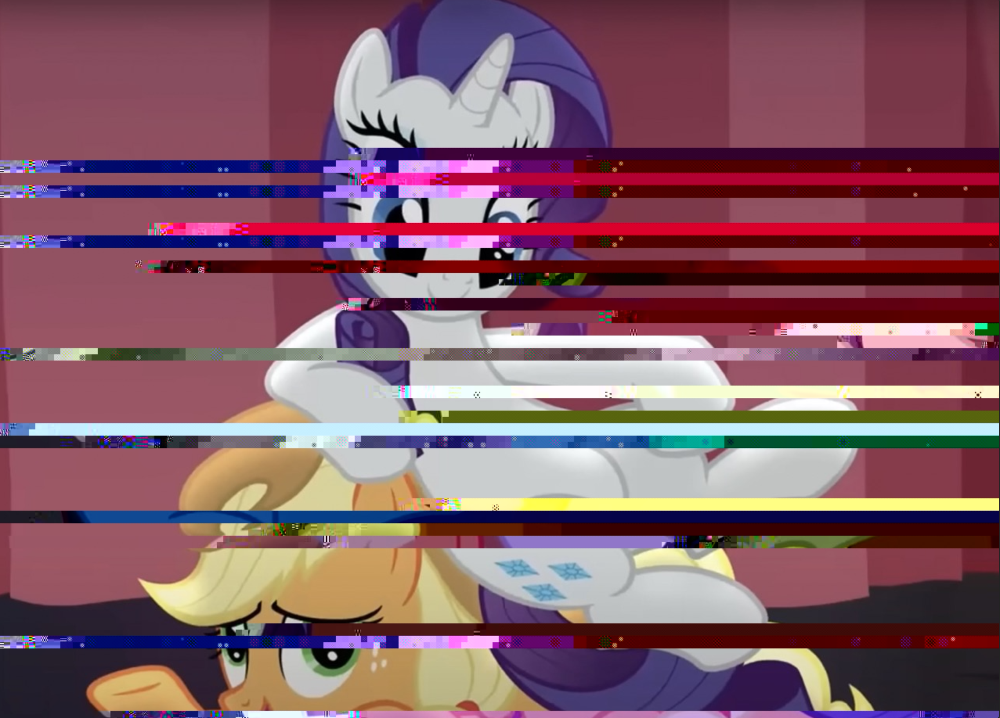

Art 74 Portfolio - Caitlyn Vu
Data Bending

This is the final glitch created for the project. Textedit was used in order to data bend the image. As stated earlier, this method was the most challenging since there isn't a pattern that can be applied for every image. I'm satisfied with how the colors came out since it could resemble the bisexual flag. I decided not to use Photoshop since I enjoyed how Apple Jack is in black and white in the middle portion. Below is the original image.
Previous Attempts
